1088C40 THERMOSTAT- R + R
- Path
- Procedures > 10 ENGINE > 1088 ENGINE COOLING > 1088C WATER PUMP AND THERMOSTAT > 1088C40 THERMOSTAT- R + R
- Kind
- repair procedure (removal / refitting; the operation number is the code)
- Applies to
- all engines; all production periods
- Interactive page
- https://sloeber94.github.io/elrnDB-aBrrSpdr/en/#/946002008
Applies to: engines: 2.2 JTS; all production periods
 Removing
Removing
 Refitting
Refitting- Position the vehicle on a lift.
1. Undo the coolant drain plug in the water pump and drain the coolant.
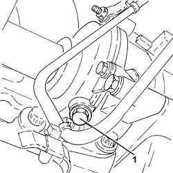
Applies to: engines: 2.2 JTS; all production periods
1. Loosen the collar and disconnect the upper coolant input sleeve to the radiator, thermostat side.
2. Undo the bolts (2a) and remove the thermostat cover (2b).
3. Remove thermostat (3a) and sealing ring (3b).
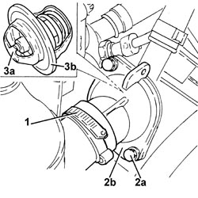
Applies to: engines: 2.2 JTS; all production periods
Refitting
Removing1. Clean the sealing surfaces, then fit the thermostat (1a) with a new sealing ring (1b).
2. Place the thermostat cover (2a) in its housing and secure it by tightening the bolts (2b) to the recommended torque.
Component | Fastening | dia | Value (daNm) | Validity |
|---|---|---|---|---|
Thermostat unit cover | Bolt | M6 | (thermostat unit side) 0.8 | 1.9 JTS 2.2 JTS |
3. Connect the upper coolant input sleeve to the radiator, thermostat side, and tighten the band.
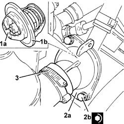
Applies to: engines: 2.2 JTS; all production periods
1. Tighten the coolant drain plug to the water pump to the recommended torque.
Component | Fastening | dia | Value (daNm) | Validity |
|---|---|---|---|---|
Drain plug on water pump | - | M20 | (water pump side) 2.0 | 1.9 JTS 2.2 JTS |
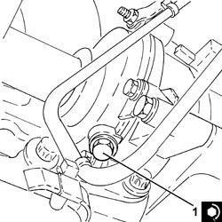
Applies to: engines: 2.2 JTS; all production periods
Op. 0010T20 ENGINE COOLANT - CHANGE
- Remove the vehicle from the lift.
Applies to: engines: 3.2 JTS; all production periods
Removing
RefittingOp. 0010T20 ENGINE COOLANT - CHANGE
1. Undo the bolt (1a) fixing the bracket (1b) for the three-way connector between the radiator and the thermostat (1c).
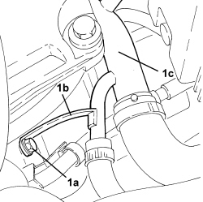
Applies to: engines: 3.2 JTS; all production periods
1. Undo the bolt (1a) fixing the three-way connector between the radiator and the thermostat (1b) and disconnect it from the thermostat.
- Remove the O-ring from the three-way connector between the radiator and the thermostat.
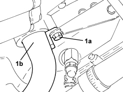
Applies to: engines: 3.2 JTS; all production periods
1. Undo the bolts (1a) and remove the thermostat (1b) from its housing and from the heater rigid water supply pipe (1c).
- Remove the gasket.
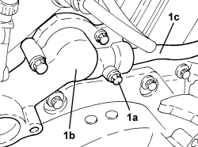
Applies to: engines: 3.2 JTS; all production periods
Refitting
Removing- Place the thermostat complete with a new gasket back in its housing and tighten the bolts to the recommended torque.
Component | Fastening | dia | Value (daNm) | Validity |
|---|---|---|---|---|
Thermostat | Bolt | - | 1.0 | 3.2 JTS |
- Connect the three-way connector between the radiator and the thermostat to the thermostat complete with a new O-ring and secure it using the bolt.
- Tighten the bolt fixing the bracket for the three-way connector between the radiator and the thermostat .
Applies to: engines: 2.4 JTD 20v; all production periods
Removing
Refitting- Position the vehicle on a lift.
Op. 1016A10 SOUND-PROOFING COVER - R.R
Op. 5530B52 BATTERY SUPPORT/DRIP TRAY - R.R
Op. 7055B54 UNDER ENGINE PROTECTION/GUARD - R.R.
Op. 1048B22 AIR SUPPLY HOSE FROM HEAT EXCHANGER TO INTAKE MANIFOLD - R + R
1. Undo the radiator coolant drain plug.

Applies to: engines: 2.4 JTD 20v; all production periods
1. Loosen the band and disconnect the radiator upper coolant inlet hose, thermostat side.
2. Undo the nut fixing the engine coolant return pipe from the engine oil heat exchanger.
3. Loosen the band and disconnect the coolant delivery pipe to the climate control system heater, thermostat side.
4. Loosen the band and disconnect the coolant supply pipe to the engine oil heat exchanger, thermostat side.
5. Disconnect the electrical connection from the engine coolant temperature sensor.
Description | Connector | |
|---|---|---|
5 | Engine coolant temperature sensor/sender unit |
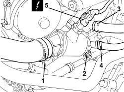
Applies to: engines: 2.4 JTD 20v; all production periods
1. Disconnect the rapid connector for the vacuum intake pipe from the vacuum pump.
2. Loosen the band and disconnect the engine oil vapour recovery pipe from the engine oil filler.
3. Loosen the band and disconnect the flexible pipe from the rigid coolant return pipe to the engine coolant reservoir.
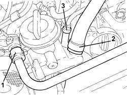
Applies to: engines: 2.4 JTD 20v; all production periods
1. Undo the bolts (1a) and remove the thermostat (1b) complete with O-ring (1c).
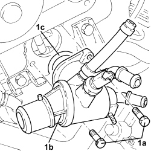
Applies to: engines: 2.4 JTD 20v; all production periods
Refitting
Removing1. Place the thermostat (1a) in its housing with the o-ring (1b) and secure it by tightening the bolts (1c) to the recommended torque.
Component | Fastening | dia | Value (daNm) | Validity |
|---|---|---|---|---|
Thermostat | Bolt | M8 | 2.4 | 2.4 JTD 20V |
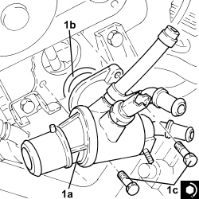
Applies to: engines: 2.4 JTD 20v; all production periods
- Connect the flexible pipe to the rigid coolant return pipe to the engine coolant reservoir and tighten the band.
- Connect the engine oil vapour recovery pipe to the engine oil filler and tighten the band.
- Connect the rapid connector for the vacuum intake pipe to the vacuum pump.
- Connect the electrical connection to the engine coolant temperature sensor.
- Connect the coolant supply pipe to the engine oil heat exchanger, thermostat side, and tighten the band.
- Connect the coolant delivery pipe to the climate control system heater, thermostat side, and tighten the band.
- Tighten the nut fixing the engine coolant return pipe from the engine oil heat exchanger.
- Connect the radiator upper coolant inlet hose, thermostat side, and tighten the band.
- Tighten the coolant drain plug to the radiator.
Op. 1048B22 AIR SUPPLY HOSE FROM HEAT EXCHANGER TO INTAKE MANIFOLD - R + R
Op. 5530B52 BATTERY SUPPORT/DRIP TRAY - R.R
Op. 0010T20 ENGINE COOLANT - CHANGE
Op. 7055B54 UNDER ENGINE PROTECTION/GUARD - R.R.
Op. 1016A10 SOUND-PROOFING COVER - R.R
- Remove the vehicle from the lift.